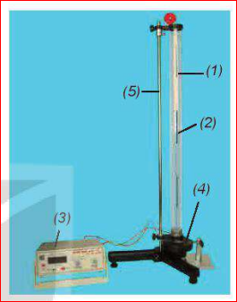

CHƯƠNG II - SÓNG
Bài 15 Thực Hành: Đo Tốc Độ Truyền Âm
I. DỤNG CỤ THÍ NGHIỆM
- Ống trụ làm bằng thuỷ tinh hữu cơ trong suốt, có đường kính trong 40 mm, dài 670 mm, có chia độ \( 0 \div 660 \) mm (1).
- Pít-tông làm bằng thép bọc nhựa, có vạch dấu, nối với dây kéo và ròng rọc, có thể di chuyển dễ dàng trong ống (2).
- Máy phát tần số phát ra tín hiệu có dạng sin (3).
- Một loa nhỏ (4).
- Giá đỡ ống trụ (5).

[Hình 15.1 - Bộ thí nghiệm đo tốc độ truyền âm]'">Hình 15.1. Bộ thí nghiệm đo tốc độ truyền âm
II. THIẾT KẾ PHƯƠNG ÁN THÍ NGHIỆM
Lắp ống trụ đã được lồng pít-tông ở trong ống lên giá đỡ, ghép loa sát đầu dưới của ống trụ (Hình 15.1).
*Có thể sử dụng âm thoa La thay cho loa.
Nối máy phát tần số với loa, bật công tắc nguồn của máy phát tần số, điều chỉnh biên độ và tần số để nghe rõ âm (hoặc dùng búa cao su gõ vào một nhánh của âm thoa), đồng thời dịch chuyển dần pít-tông ra xa loa. Trả lời câu hỏi sau:
a) Khi pít-tông di chuyển, độ to của âm thanh nghe được thay đổi như thế nào?
b) Khoảng cách giữa hai vị trí liên tiếp của pít-tông mà âm thanh nghe được to nhất cho phép xác định đại lượng nào của sóng âm?
c) Cần đo đại lượng nào để tính được tốc độ truyền âm?
Lời giải:
a) Khi dịch chuyển pít-tông, ta sẽ nghe thấy độ to của âm thanh thay đổi tuần hoàn: âm to dần lên đến mức cực đại, sau đó lại nhỏ dần đi, rồi lại to lên...
b) Khoảng cách giữa hai vị trí liên tiếp của pít-tông mà âm thanh nghe to nhất (tương ứng với 2 bụng sóng liên tiếp của sóng dừng) chính bằng một nửa bước sóng \( \frac{\lambda}{2} \).
c) Để tính được tốc độ truyền âm \( (v = \lambda \cdot f) \), ta cần đo 2 đại lượng: Tần số âm \( f \) (đọc trên máy phát tần số hoặc tần số ghi trên âm thoa) và Khoảng cách giữa 2 lần liên tiếp âm to nhất \( d \) (từ đó tính được bước sóng \( \lambda = 2d \)).
III. TIẾN HÀNH THÍ NGHIỆM
1. Điều chỉnh máy phát tần số đến giá trị 500 Hz.
2. Dùng dây kéo pít-tông di chuyển trong ống thuỷ tinh, cho đến lúc âm thanh nghe được to nhất. Xác định vị trí âm thanh nghe được là lớn nhất lần 1. Đo chiều dài cột khí \( l_1 \). Ghi số liệu vào Bảng 15.1.
Thực hiện thao tác thêm hai lần nữa.
3. Tiếp tục kéo pít-tông di chuyển trong ống thuỷ tinh, cho đến lúc lại nghe được âm thanh to nhất. Xác định vị trí của pít-tông mà âm thanh nghe được là to nhất lần 2. Đo chiều dài cột khí \( l_2 \). Ghi số liệu vào Bảng 15.1.
Thực hiện thao tác thêm hai lần nữa.
Hình 15.2. Máy phát tần số
IV. KẾT QUẢ THÍ NGHIỆM
Bảng 15.1
Tần số nguồn âm \( f = ... \pm ... Hz \).
| Chiều dài cột không khí khi âm to nhất (cm) |
Lần 1 | Lần 2 | Lần 3 | Giá trị trung bình (\( l \)) | Sai số \( \Delta l \) |
|---|---|---|---|---|---|
| \( l_1 \) | ? | ? | ? | ? | ? |
| \( l_2 \) | ? | ? | ? | ? | ? |
Xử lí kết quả thí nghiệm
a) Tính chiều dài cột không khí giữa hai vị trí của pít-tông khi âm to nhất \( d = l_2 - l_1 = ? \)
b) Tính tốc độ truyền âm \( v = \lambda f = 2df = ? \)
c) Tính sai số: \( \delta v = \delta d + \delta f = ? \)
\( \Delta v = ? \)
d) Giải thích tại sao không xác định tốc độ truyền âm qua \( l_1, l_2 \) mà cần xác định qua \( l_2 - l_1 \)
Hướng dẫn:
a) Khoảng cách \( d \) tính bằng: \( \bar{d} = \bar{l_2} - \bar{l_1} \).
b) Tính giá trị trung bình tốc độ truyền âm: \( \bar{v} = 2 \cdot \bar{d} \cdot \bar{f} \).
c) Tính sai số:
- Sai số tỉ đối: \( \delta v = \frac{\Delta v}{\bar{v}} = \frac{\Delta d}{\bar{d}} + \frac{\Delta f}{\bar{f}} = \delta d + \delta f \)
- Sai số tuyệt đối: \( \Delta v = \delta v \cdot \bar{v} \)
d) Khi thiết lập sóng dừng trong ống, tại miệng hở của ống (chỗ đặt loa) sóng không phản xạ hoàn toàn tại đúng miệng ống mà dời ra ngoài một đoạn nhỏ (gọi là hiệu ứng đầu miệng). Do đó \( l_1 \) không chính xác bằng \( \lambda/4 \) hay \( \lambda/2 \). Khi ta lấy hiệu số \( d = l_2 - l_1 \), phần sai số hệ thống ở miệng ống bị triệt tiêu, giúp ta đo được chính xác khoảng cách \( \lambda/2 \) giữa 2 nút/bụng sóng.
💡 EM CÓ BIẾT
Sử dụng một số phần mềm trên điện thoại hay máy tính có thể thay thế cho máy phát âm tần.
🛠️ EM CÓ THỂ
Chế tạo chiếc đàn Klông Pút bằng các ống nứa hoặc ống nhựa rỗng, có độ dài khác nhau và có thể phát ra được âm có tần số bằng tần số các nốt nhạc cơ bản.
✅ EM ĐÃ HỌC
Cách đo tốc độ truyền âm trong không khí nhờ hiện tượng sóng dừng.
🌟 EM CÓ BIẾT
Âm có thể truyền trong các môi trường chất rắn, chất lỏng và chất khí với tốc độ khác nhau. Tốc độ truyền âm trong một số môi trường như Bảng 15.2.
| Môi trường | Tốc độ (m/s) |
|---|---|
| Không khí | 340 |
| Gỗ | 3400 |
| Nước | 1500 |
| Thép | 6100 |
| Thuỷ tinh | 5500 |
BÀI TẬP CỦNG CỐ & VẬN DỤNG
A. TRẮC NGHIỆM CỦNG CỐ
B. BÀI TẬP VẬN DỤNG TÍNH TOÁN
Bài 1:
Trong một thí nghiệm đo tốc độ truyền âm, học sinh sử dụng máy phát tần số thiết lập ở mức \( f = 500 Hz \). Kéo pít-tông, học sinh ghi nhận vị trí âm to nhất lần 1 ở \( l_1 = 17 cm \), và lần 2 ở \( l_2 = 51 cm \). Hãy tính tốc độ truyền âm trong không khí đo được từ thí nghiệm này.
Giải:
Khoảng cách giữa hai vị trí liên tiếp nghe âm to nhất là:
\( d = l_2 - l_1 = 51 - 17 = 34 \text{ cm} = 0.34 \text{ m} \)
Tốc độ truyền âm là:
\( v = 2 \cdot d \cdot f = 2 \cdot 0.34 \cdot 500 = 340 \text{ m/s} \).
Bài 2:
Với kết quả tính ở Bài 1 (\( \bar{v} = 340 \text{ m/s} \)). Giả sử sai số tỉ đối của phép đo khoảng cách là \( \delta d = 1.5\% \) và sai số tỉ đối của máy phát tần số là \( \delta f = 0.5\% \). Hãy tính sai số tuyệt đối \( \Delta v \) của phép đo vận tốc.
Giải:
Sai số tỉ đối của phép đo vận tốc là tổng các sai số tỉ đối:
\( \delta v = \delta d + \delta f = 1.5\% + 0.5\% = 2\% = 0.02 \)
Sai số tuyệt đối của phép đo là:
\( \Delta v = \bar{v} \cdot \delta v = 340 \cdot 0.02 = 6.8 \text{ m/s} \).
Bài 3:
Thay vì dùng máy phát tần số, một học sinh dùng âm thoa chuẩn La có tần số \( f = 440 Hz \). Biết tốc độ truyền âm trong phòng thí nghiệm hôm đó là \( 343.2 \text{ m/s} \). Hãy dự đoán khoảng cách \( d \) giữa hai vị trí liên tiếp của pít-tông để nghe được âm to nhất.
Giải:
Ta có công thức: \( v = 2 \cdot d \cdot f \)
Suy ra khoảng cách \( d \) là:
\( d = \frac{v}{2f} = \frac{343.2}{2 \cdot 440} = \frac{343.2}{880} = 0.39 \text{ m} = 39 \text{ cm} \).